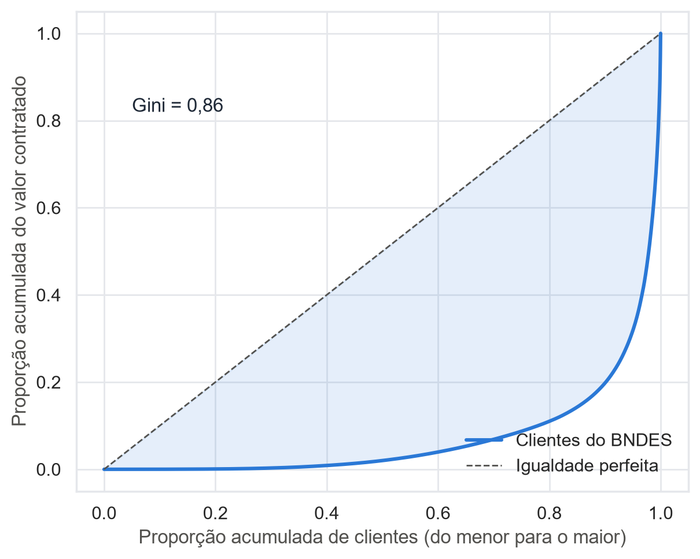
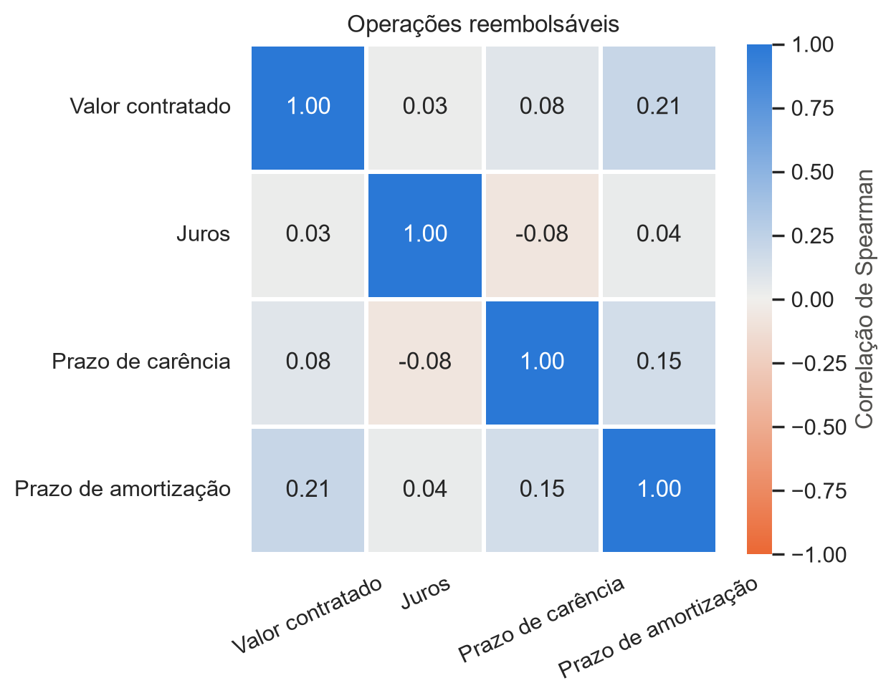

Este estudo analisa 24.035 subcréditos de financiamentos não automáticos do Banco Nacional de Desenvolvimento Econômico e Social (BNDES), contratados entre janeiro de 2002 e setembro de 2026 e publicados como dados abertos. Foi construído um pipeline determinístico em Python (pandas e NumPy) que lê o arquivo em Windows-1252, converte tipos, padroniza categorias e sinaliza inconsistências sem descartar linhas, gravando a base tratada em formatos abertos. A análise responde a três perguntas: a evolução do valor contratado, a concentração por porte, setor, região e cliente, e a relação entre valor, prazo e juros. O valor anual passou por quatro regimes, com pico de R$ 129,5 bilhões em 2012 e vale de R$ 24,1 bilhões em 2016, e 46,9% do valor é contratado de outubro a dezembro. A concentração é elevada: clientes grandes respondem por 96,3% do valor, a infraestrutura por 60,3% e o coeficiente de Gini entre clientes é 0,86. Nas operações reembolsáveis, valor, prazo e juros se associam de forma fraca (correlação de Spearman entre -0,08 e 0,21), e o apoio à inovação tem valores e prazos menores. Os resultados são descritivos, com limitações de cobertura e de valores nominais. Código, dados e artigo seguem os princípios FAIR.
O BNDES é um dos principais instrumentos de crédito de longo prazo do país e publica, em seu portal de dados abertos, o detalhe das operações que contrata. A disponibilidade dos dados, porém, não basta: é preciso um fluxo de trabalho que trate as peculiaridades do arquivo, registre cada decisão e permita que outra pessoa chegue aos mesmos números (WILKINSON et al., 2016). Este trabalho parte das operações de financiamento não automáticas, em que cada contrato é analisado individualmente pelo banco, e examina como o volume contratado se comporta ao longo do tempo, como ele se distribui entre os clientes e quais condições financeiras acompanham o valor.
O estudo responde a três perguntas de pesquisa:
Os dados são o recurso Operações não automáticas do conjunto Operações de Financiamento, publicado pelo BNDES sob licença ODbL (BNDES, 2026), acessado em 16 nov. 2026. O arquivo tem 24.035 linhas e 34 colunas, de 02/01/2002 a 30/09/2026. Cada linha é um subcrédito: um contrato pode ter vários, com condições distintas, e a soma deles é o valor do contrato. A base reúne 8.440 contratos, 4.429 clientes (CNPJ) e 1.145 municípios. Por isso a unidade de análise é o subcrédito, e os valores são somados por contrato ou cliente quando a pergunta exige.
O arquivo não é trivial: usa ponto e vírgula, codificação Windows-1252 (não UTF-8), vírgula decimal e o marcador
---------- no lugar de valores ausentes, com espaços à direita nas células. Todas as colunas são lidas como
texto e convertidas de forma explícita. O tratamento segue uma regra: nenhuma linha é descartada. Cada
inconsistência vira uma coluna de sinalização, e as contagens ficam em relatorio_etl.json, junto com o
SHA-256 do arquivo bruto.
def carregar_bruto(caminho: Path = CAMINHO_BRUTO) -> pd.DataFrame:
return pd.read_csv(
caminho, sep=SEPARADOR, encoding=CODIFICACAO, dtype=str, keep_default_na=False
)
def converter_tipos(df: pd.DataFrame) -> tuple[pd.DataFrame, dict]:
df = df.copy()
invalidos = {}
for coluna in COLUNAS_VALOR:
convertido = pd.to_numeric(df[coluna].str.replace(",", ".", regex=False), errors="coerce")
invalidos[coluna] = int(convertido.isna().sum() - df[coluna].isna().sum())
df[coluna] = convertido
for coluna in COLUNAS_PRAZO:
convertido = pd.to_numeric(df[coluna], errors="coerce")
invalidos[coluna] = int(convertido.isna().sum() - df[coluna].isna().sum())
df[coluna] = convertido.astype("Int64")
df["data_da_contratacao"] = pd.to_datetime(df["data_da_contratacao"], format="%Y-%m-%d", errors="coerce")
invalidos["data_da_contratacao"] = int(df["data_da_contratacao"].isna().sum())
df["numero_do_contrato"] = df["numero_do_contrato"].astype("string")
df["municipio_codigo"] = pd.to_numeric(df["municipio_codigo"], errors="coerce").astype("Int64")
return df, {coluna: n for coluna, n in invalidos.items() if n}Cinco colunas trazem marcadores de ausente: a instituição credenciada (19.964 linhas) é ausente por construção nas operações diretas; o tipo de excepcionalidade só existe para contratos a partir de 2020; a fonte de recurso e a situação do contrato não têm explicação no dicionário e foram tratadas como não informadas. Os marcadores viram nulo, sem imputação. Também foram criadas a região do país a partir da UF, o prazo total, a taxa de execução (desembolsado sobre contratado) e três sinalizações:
def sinalizar_inconsistencias(df: pd.DataFrame, colunas_originais: list[str]) -> pd.DataFrame:
df = df.copy()
df["flag_linha_repetida"] = df.duplicated(subset=colunas_originais, keep="first")
df["flag_desembolso_acima_contratado"] = df["valor_desembolsado_reais"] > df["valor_contratado_reais"]
q1, q3 = df["log10_valor_contratado"].quantile([0.25, 0.75])
amplitude = q3 - q1
df["flag_outlier_valor"] = (df["log10_valor_contratado"] < q1 - 1.5 * amplitude) | (
df["log10_valor_contratado"] > q3 + 1.5 * amplitude
)
return dfForam sinalizadas 408 linhas idênticas a outra anterior (que podem ser subcréditos legítimos de mesmo valor), 6.081 linhas em que o desembolso supera o contratado (25,3%; o dicionário do BNDES atribui isso à correção por indexador) e 174 outliers de valor, que somam 13,5% do total. Como o valor por subcrédito é muito assimétrico (mediana de R$ 9,2 milhões e média acima de R$ 51 milhões), as análises usam medianas, escala logarítmica e a correlação de Spearman. A base tratada é gravada em Parquet e em CSV comprimido, com dicionário de dados em Markdown.
O valor total contratado na base é de R$ 1.240,2 bilhões, dos quais R$ 964,6 bilhões foram desembolsados (77,8%). Como 2026 termina em 30 de setembro, as comparações anuais usam 2002-2025. Os gráficos são interativos: passe o mouse para ver os valores.
O valor anual não segue uma tendência única. A média anual é de R$ 24,7 bilhões em 2002-2008, sobe para R$ 86,4 bilhões em 2009-2014, com pico de R$ 129,5 bilhões em 2012, cai para R$ 35,4 bilhões em 2015-2019, com vale de R$ 24,1 bilhões em 2016, e volta a R$ 55,2 bilhões em 2020-2025. Em 2024 o valor chega a R$ 94,5 bilhões. Os dados mostram quando o volume mudou, não por que: associar cada regime a políticas públicas ou ao ciclo econômico exigiria dados externos.
A série mensal é muito irregular, e poucas operações movem o total. O mês de maior valor é 69,3 bilhões em 12/2012, e o maior cliente daquele mês, Norte Energia S/A, responde sozinho por R$ 16,8 bilhões. A média móvel suaviza esse ruído e deixa visíveis os regimes da Figura 1.
Há uma marca sazonal clara: 46,9% do valor é contratado de outubro a dezembro, contra os 25% que uma distribuição uniforme daria a um trimestre, e dezembro sozinho concentra 28,0% do valor e 18,7% dos subcréditos. O padrão não depende de um ano atípico: o quarto trimestre passa de 25% em 22 dos 24 anos completos, e sem 2012 a participação continua em 44,4%. É compatível com o fechamento de contratos ao fim do ano, mas a base não permite confirmar a causa.
| Porte | Subcréditos | Valor (R$ bi) | Participação | Mediana (R$ mi) |
|---|---|---|---|---|
| Grande | 20.785 | 1.194,6 | 96,3% | 11,09 |
| Média | 1.728 | 36,8 | 3,0% | 5,62 |
| Pequena | 837 | 4,8 | 0,4% | 1,32 |
| Micro | 685 | 4,0 | 0,3% | 1,11 |
Os clientes de porte grande ficam com 96,3% do valor, e a mediana por subcrédito é de R$ 11,1 milhões, contra R$ 1,1 milhão das microempresas. A concentração por porte é a mais intensa das dimensões analisadas.
Por setor, a infraestrutura responde por 60,3% do valor, a indústria por
23,3%, comércio e serviços por 14,5% e a
agropecuária por 1,9%. Por região, o Sudeste lidera com
36,6%, com São Paulo (18,4%) e Rio de Janeiro
(11,9%) à frente. Um dado relevante é que 18,8%
do valor está em operações sem UF única (código IE), em geral de empresas com projetos em vários estados;
por isso a leitura regional subestima o peso real das regiões.

Entre os 4.429 clientes, o coeficiente de Gini é 0,86: o 1% maior (44 clientes) concentra 34,9% do valor, e os dez maiores, 15,5%. Os cinco maiores são Petroleo Brasileiro S A Petrobras (R$ 33,7 bi), Estado De Sao Paulo (R$ 31,5 bi), Norte Energia S/A (R$ 23,4 bi), Vale S.A. (R$ 20,4 bi), Suzano S.A. (R$ 19,7 bi). Ainda assim, nenhum cliente domina sozinho: o maior tem 2,7% do total.
As operações não reembolsáveis (6,7% das linhas e 1,0% do valor) têm juros e prazos iguais a zero por definição. Misturadas às demais, elas inflam a correlação entre valor e prazo de amortização para 0,27. A análise a seguir usa só as 22.419 operações reembolsáveis.

As relações são fracas: valor × amortização 0,21, valor × carência 0,08 e valor × juros 0,03. O tamanho da operação quase não explica o custo, e o prazo é a única condição que cresce de forma perceptível com o valor.
No apoio à inovação (7,5% das linhas), o valor mediano é menor (R$ 3,9 milhões contra R$ 10,9 milhões), a amortização é mais curta (60 contra 84 meses) e os juros medianos ficam um pouco acima (2,70% contra 2,56%). A comparação é descritiva: porte, setor e instrumento financeiro também diferem entre os grupos, e não foram controlados.
O valor contratado em operações não automáticas do BNDES passa por regimes distintos entre 2002 e 2025, com pico em 2012 e vale em 2016, e concentra 46,9% do total no quarto trimestre. A concentração é forte em clientes de grande porte (96,3%), em infraestrutura (60,3%) e no Sudeste (36,6%), e o Gini entre clientes é 0,86. Nas operações reembolsáveis, valor, prazo e juros se relacionam de forma fraca, e o apoio à inovação tem operações menores e de prazo mais curto.
Limitações. A base cobre só as operações não automáticas, não o total de financiamentos do banco; 2026 está incompleto; os valores são nominais, sem correção pela inflação; a região é derivada da UF e 18,8% do valor não tem UF única; e as associações são descritivas, sem controle de variáveis. A análise de sensibilidade mostra que excluir as linhas repetidas mudaria o total em 1,6%, sem alterar as conclusões.
Trabalhos futuros. Deflacionar os valores (por exemplo, pelo IPCA), incluir as operações indiretas automáticas (arquivo de cerca de 1,2 GB, que exigiria processamento em blocos), comparar com indicadores regionais e testar modelos que controlem porte, setor e instrumento ao estimar prazo e juros.
README.md traz resumo, palavras-chave, identificação de autoria, disciplina e semestre, e o link permanente da fonte original dos dados (https://dadosabertos.bndes.gov.br/dataset/operacoes-financiamento).data/data_dictionary.md; dados tratados em Parquet e CSV comprimido; relatório do tratamento em JSON.requirements.txt com todas as versões congeladas.Para clonar o repositório e reproduzir o pipeline, a análise e este artigo:
git clone https://github.com/GuilhermeF2/projeto-g1.git
cd projeto-g1
python -m venv .venv
.venv\Scripts\activate # Linux/macOS: source .venv/bin/activate
pip install -r requirements.txt
python -m src.etl # data/raw -> data/processed
jupyter notebook notebooks/analise_exploratoria.ipynb
python -m src.gerar_artigo # regenera docs/index.html